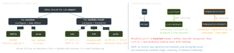

cross-platform · folio
In one line: Kotlin is Swift’s closest cousin: nullability in the type system,
immutable-by-default bindings, sealed hierarchies + exhaustive
when, extensions and trailing lambdas. The differences that matter:
classes only (no value-type structs — data class is a reference type),
JVM generics are erased (reified is the escape), extensions are
statically dispatched, and internal means Gradle module.
Download PDF Print view LaTeX source


Null safety & types
Stringnever null,String?may be.?.safe call,?:Elvis (right side mayreturn/throw),!!= NPE if null (Swift!). Smart cast afterif (x != null)/is— only forvals/locals the compiler can prove unchanged.- Platform types
String!: Java values without nullness annotations — the compiler trusts you; a null blows up at first use, far from the cause. val= read-only reference (Swiftlet), not deep immutability.lateinit var: non-null, set later, throws if read first.==callsequals(),==== same instance.Unit=Void,Nothing=Never. No checked exceptions.
Classes
- final by default —
opento subclass. Visibility:public(default!),internal= same module,protected= subclasses,privatetop-level = file. data class:equals/hashCode/toString/copy()/componentN()from the primary constructor only — body properties ignored. Still a reference:copyis shallow.sealed class/interface: subclasses known at compile time (same module + package) →whenwithoutelse; exhaustiveness is an error for sealed/enum/Boolean subjects. Guards:is A if x > 0(2.2). Swift->…enumwith payloads ≈ sealed +data classes.@JvmInline value class: one property, unboxed at runtime (boxed when nullable/generic/as interface) — a zero-cost type-safe id.object= thread-safe lazy singleton;companion object= statics.
Example
@JvmInline value class UserId(val raw: String)
data class User(val id: UserId, val name: String?)
sealed interface Load<out T> { // out: Load<Nothing> fits all
data object Loading : Load<Nothing>
data class Done<T>(val value: T) : Load<T>
data class Failed(val e: Throwable) : Load<Nothing>
}
fun label(s: Load<User>): String = when (s) { // no else needed
Load.Loading -> "..."
is Load.Done -> s.value.name?.uppercase() ?: "anon" // smart cast
is Load.Failed -> s.e.message!! // NPE if null
}
inline fun <reified T> Any.asOrNull(): T? = this as? T // T kept
val cfg by lazy { loadConfig() } // once, SYNCHRONIZED
fun html(init: Html.() -> Unit) = Html().apply(init) // DSLFunctions, lambdas, delegation
- Extensions compile to static functions taking the receiver: resolved by the declared type, never overridden; a member always
wins. Nullable receivers OK (
String?.isNullOrEmpty()). inline funpastes body + lambda into the call site: no lambda object;returnin the lambda returns from the caller (non-local).noinlinekeeps a lambda as an object,crossinlinebans non-local return.reified T(inline only) survives erasure:is T,T::class.- Lambda with receiver
T.():->Rthisis aT—buildString, Gradle Kotlin DSL, Compose scopes;@DslMarkerstops outer receivers leaking in. - Delegation:
by lazy(SYNCHRONIZEDdefault),Delegates.observable(≈didSet),by map; class delegationclass Logged(d: Repo) : Repo by d= free forwarding.
Swift ↔ Kotlin
| Swift | Kotlin |
|---|---|
struct (value, copy) | data class (reference; copy() by hand) |
enum + associated values | sealed interface + data class/object |
protocol + extension default | interface with default bodies |
guard let x else { return } | val x = y?:return |
lazy var · didSet | by lazy · Delegates.observable |
static · fileprivate | companion object · private top-level |
internal (default) | internal (opt-in; default public) |
@resultBuilder | lambda with receiver (DSL) |
| generics kept at runtime | erased on JVM; reified if inline |
Versions: K2 compiler (new FIR frontend) stable + default since Kotlin 2.0.0 (May 2024). Current 2.4.20 (Sep 2026); 2.4 made context parameters (context(log: Logger) fun …) stable, 2.2 when guards and non-local break/continue.
Traps
- “
data classis a struct” — no: shared reference,copy()shallow; avarin it breaksHashSetlookups after mutation. - Overriding an extension — impossible; the static type decides.
!!to silence the compiler — use?:,?.orrequireNotNull(x).
Remember: nulls in types · final + public by default · extensions static · erased unless reified.